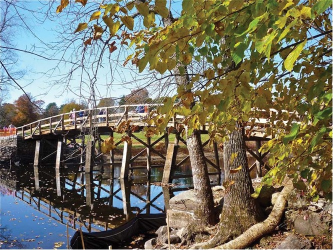

Concord River
In 1840, Thoreau began chronicling his 1839 journey with his brother along the Concord and Merrimack Rivers. After his brother's death in 1842, he considered turning the journal entries into a book, ultimately drafting "A Week on the Concord and Merrimack Rivers" at Walden Pond in 1842 and completing it in 1849 (Thoreau.H.D 4-6).

The brothers' journey begins in the chapter titled "Saturday" from Concord, serving as a departure and arrival point for physical and spiritual aspects. On the first day, they travel to Billerica , Massachusetts, and Thoreau intricately weaves their observations into the grand tapestry of universal history (Thoreau.H.D 4).

Various Animals and plants are encountered through their journey:
Bittern
Gopher Tortoise
Trumpet-weed
soap-wort gentian
The North Bridge
The chapter metaphorically depicts life as a river, symbolizing an individual's journey merging into infinity. It explores a catalog of fishes, highlighting their fragility and disposability, paradoxically contributing to the enduring continuity of their race. Thoreau recognizes virtue in their willingness to fulfill their designated role in nature despite individual wastefulness. While titled as a travel narrative, "A Week on the Concord and Merrimack Rivers" doesn't primarily focus on the Thoreau brothers' two-week journey in 1839. Instead, it delves into a self-discovery journey through nature toward the infinite. The book is deeply cerebral, literary, and metaphorical, with a lengthy and dense structure. It consists of an opening chapter and a separate chapter for each day of the week, compressing and distilling the two-week trip to convey the passage of time clearly (Thoreau.H.D 14).
Various plants and vegetation are described as well as different kinds of fish:
Salix Purshiana
Cardinals
Sunfish
Minnow
St. Ann's of Concord
Throughout each chapter, the narrative eloquently captures the essence of the journey , vividly detailing the landscapes, diverse individuals encountered, and the array of wildlife that crossed paths. The intentional restraint in providing uninterpreted descriptions preserves a sense of immediacy, inviting readers to actively engage with the journey's unfolding moments and draw their own interpretations from the rich tapestry of experiences presented (Thoreau.H.D 17).
After passing by Ball's Hill, the two brothers reach St. Ann’s of Concord:
In this place, other kinds of vegetation are mentioned and another wave of different kinds of fish are reflected upon:
Neottia or ladies'-tresses
Tansy
Perca flavescens
Leuciscus pulchellus
Hillside Billerica
The brothers now have reached Hillside Billerica. The campsite for the night is depicted in idyllic sylvan terms, weaving a connection between the past and present, utilizing specific details to unveil overarching universal significance. "Saturday" culminates with a contemplation of nocturnal sounds, heralded as indicators of nature's vitality (Thoreau.H.D 28-32).